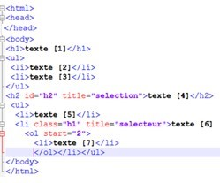
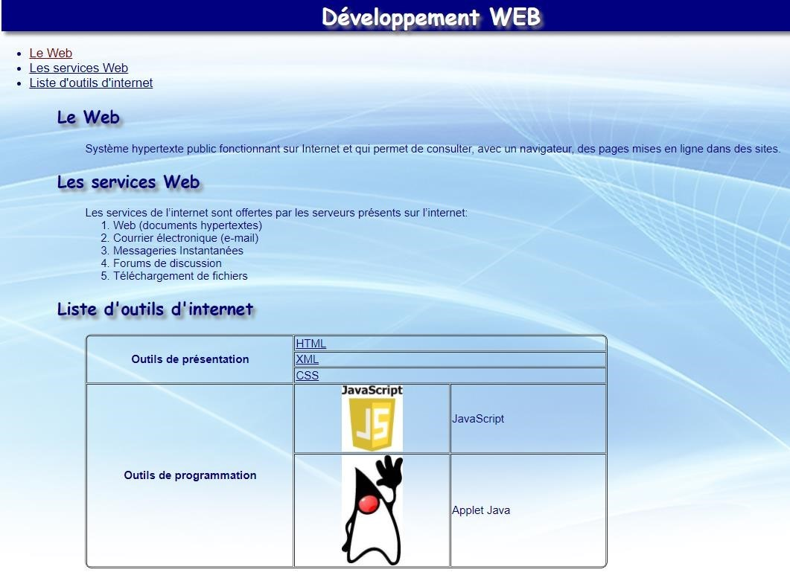
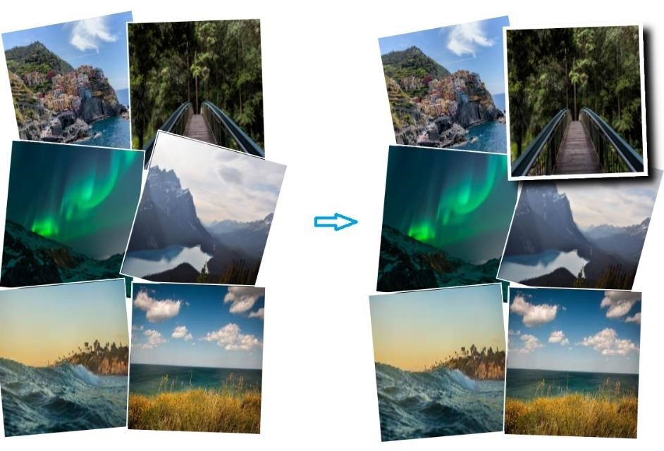
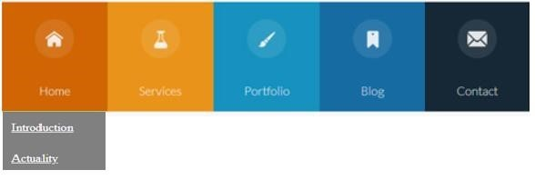

Objectif:
Expérimenter avec les notions de base du langage CSS3 (feuilles de styles
internes et externes, différents types de sélecteurs, les transformations,
les transitions, les animations, etc.)
Exerice1:
Soit le document HTML suivant :

Ajouter une feuille de style interne qui contient des sélecteurs
permettant d'appliquer les couleurs suivantes :
- bleu au corps du document
- vert aux titres h1
- bleu pour chaque balise ayant la classe "h1"
-
move pour chaque balises <li> imbriquée dans une balise
<ol> ayant un attribut "start"
- jaune pour la balise ayant l'identifiant "h2"
-
orangé pour chaque balise <li> qui apparait comme le premier
élément sous un élément parent
-
rouge pour chaque balise <li> ayant un attribut "title" dont sa
valeur commence par 'sel'
Exerice2:
Styliser le document HTML de l'exercice 5 relatif au TP1 en tenant
compte des consignes suivantes et l'affichage de la figure ci-dessous :
- La couleur par défaut du texte est le bleu "navy"
- Les titres sont en police "Comic Sans MS sans-serif"
-
Les titres de niveau 1 sont de couleur "white" et ayant un
arrière-plan de couleur "navy" et une ambre de 5px de couleur "gray"
- Le texte est en police Arial ou Helvetica (sans-serif)
-
La page contient une image en arrière-plan (image suffisamment large
pour ne pas se répliquer horizontalement)
-
Les liens sont colorés en bleu "navy" et les liens déjà visités en
"maroon"
- Les coins du tableau sont arrondis de 5px

=
Exerice3:
1. En utilisant les propriétés CSS3 nécessaires, réaliser une page de
galerie photos. Au survol de la souris, chaque photo se met au premier
plan avec une bordure de couleur blanche et une ambre.

Exerice4:
Développer un site web avec menu déroulant en utilisant uniquement HTML5
et CSS3. Lors du survol sur l'une des figures (home, services,
portfolio, etc.), une liste de liens apparaîtra
